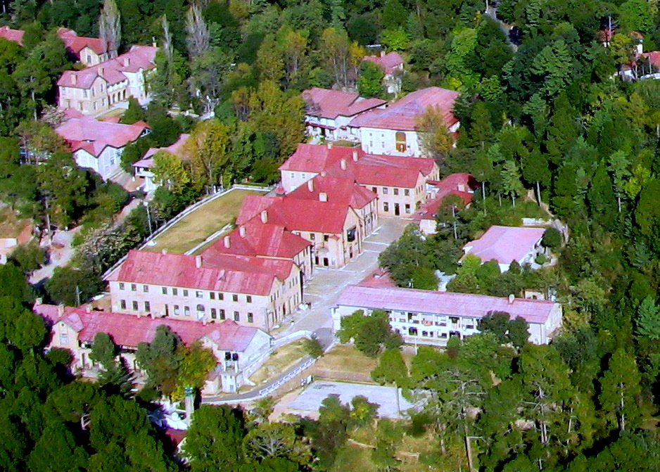

I joined Military College Murree in the year 2016 when I was in 8th Class and Passed out in 2021.
After that I joined UET, Peshawar for my Bachelor's degree.
Some of my friends made a plan to visit our college and
some other places as listed above.
Military College Murree was anaugurated by COAS Gen Ashfaq Kiyani in 2008.
The Students of MCM are known as Himalayas.
The journey begins in 8th class and ends in 2nd year.
MCM enhances our capabilities in various fields including education,
sports and co-curriculars.

We enjoyed the snow and met our juniors, instructors. This place is worth-visiting.

Lawrence College is situated in Ghora Gali, Murree. It ia an historical College made in 1860's. We met the students of Lawrence College. Indeed It was one of the best part of our journey. 
Zero point is situated near Mall Road, Murree. It is a beautiful place to visit.
The best part was when we enjoyed the chair lift, it was memorable.
Mall Road, Murree is a famous market. Nearly all the tourists visits this place once.
There are stalls of food, Toys, ice-creams and other eatables.
It is a very crowded place.